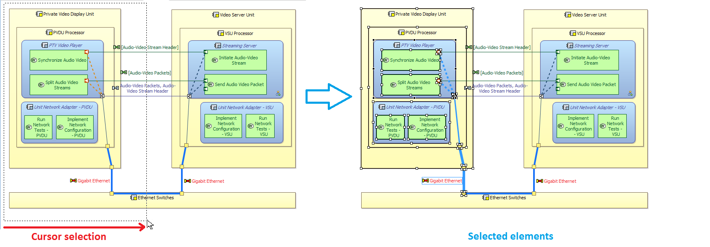
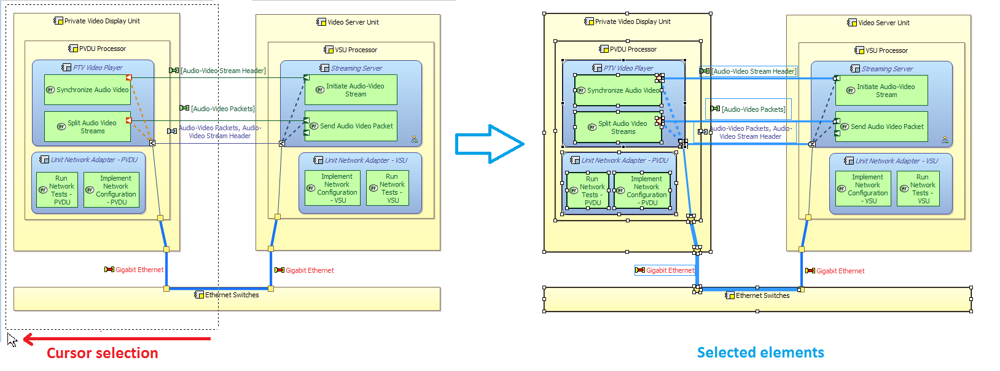
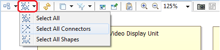

When a diagram is composed of a lot of elements (components, functions, edges...) it can become fastidious to select some of them to apply them a specific styling or other.
Thats why, two selection modes are realizable thanks to your computer cursor:


It can be necessary to select all connectors to change the routing style or remove bend point for example and select them one by one can quickly become a fastidious task.
Thus, you can select all diagram connectors in the same time by selecting Select All Connectors on the diagram menu.
